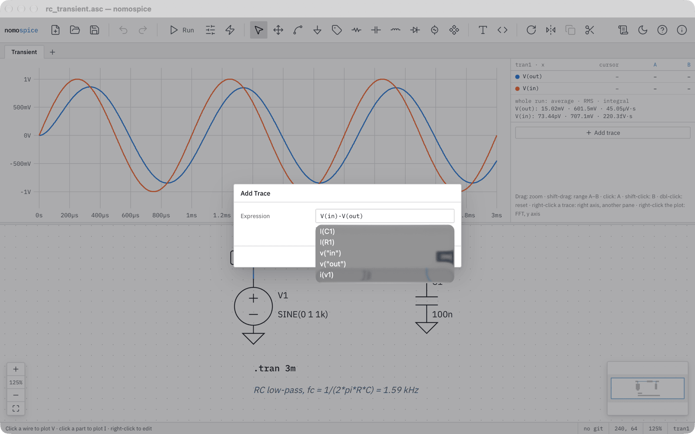
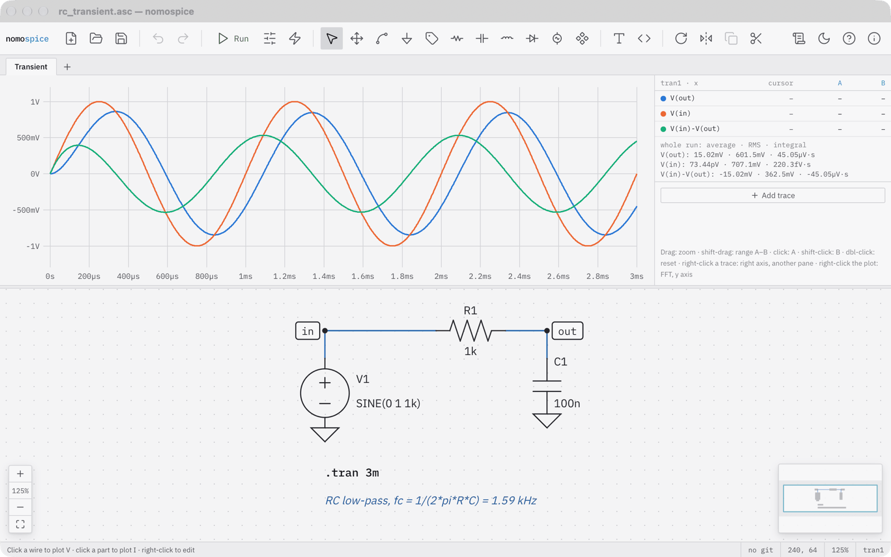
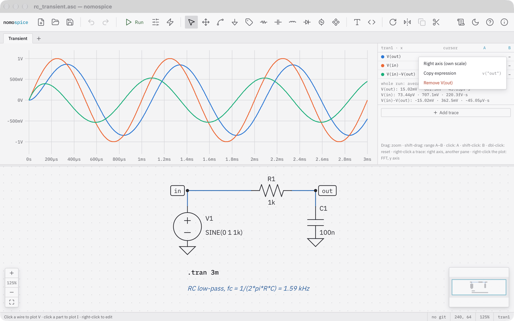
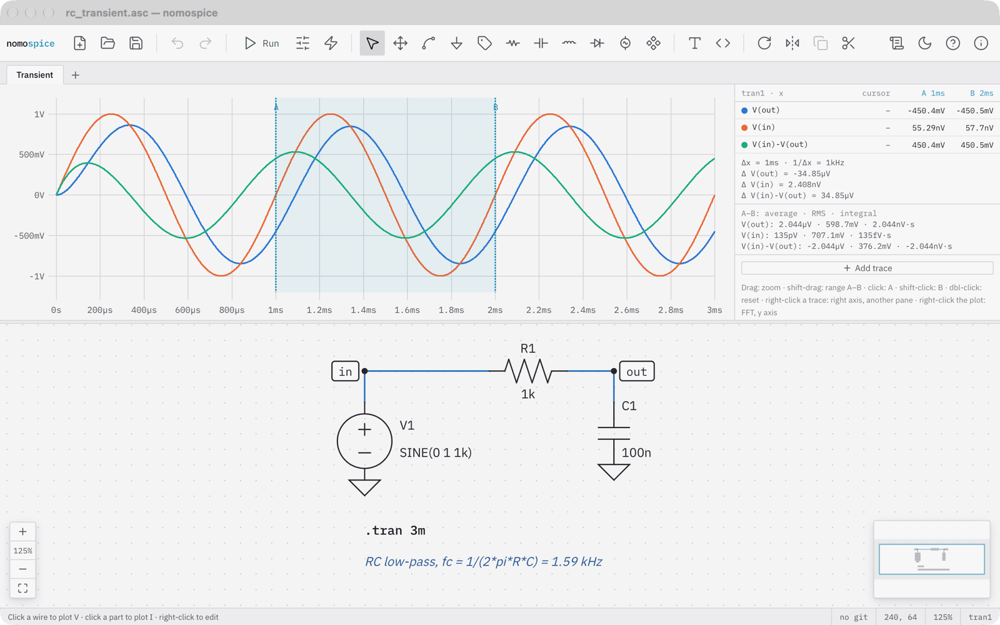
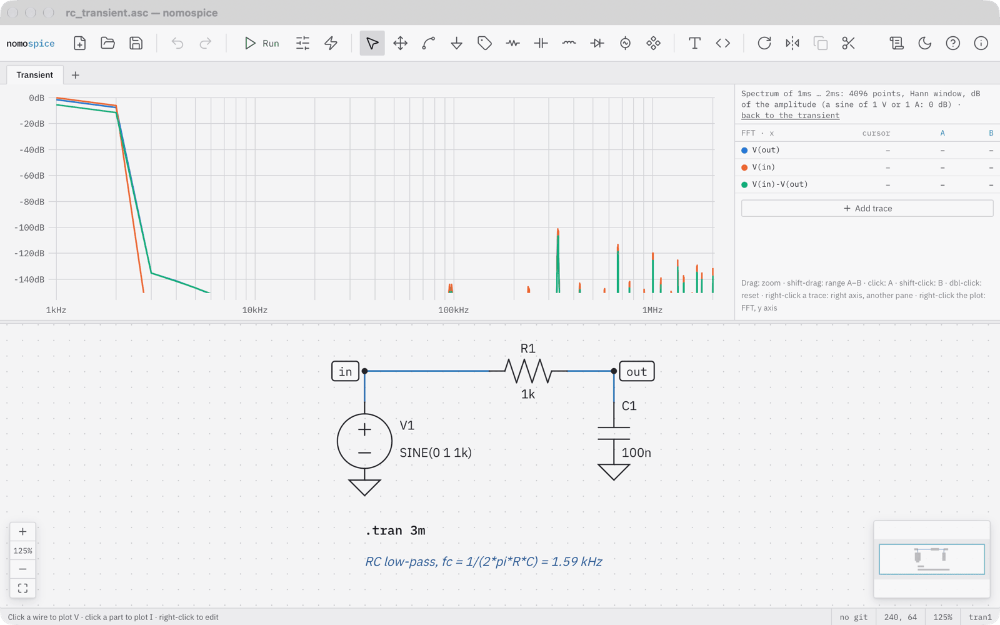

Plot and measure¶
Plot by clicking¶
After a run, the schematic is a probe:
- click a wire to plot its voltage;
- drag from one wire to another to plot the voltage between them,
V(a,b): the red probe sits where you pressed, the black one where you let go (on ground: plainV(a)). While results are shown, a drag that starts on a wire or a label probes; to move one, use the move tool (M); - click a part to plot its current, in transient, DC and AC analyses alike;
- click near a pin of a transistor or an IC to plot that pin's current, such as
Ib(Q1)orIx(U1:OUT); - right-click a two-pin part and choose Plot power for the power it takes (transient and DC analyses).
Each unit gets a pane of its own: volts, amperes, watts.
Plot an expression¶

Click Add trace beside the plot and type an expression in ngspice's syntax: V(in)-V(out), I(R1), V(in)*I(R1) (in watts), P(R1)+P(R2) (two-pin parts' power, as Plot power draws it; transient and DC analyses), db(V(out)), group_delay(V(out)). The unit follows from the expression. A constant, such as 0.5, draws a reference line.

Arrange traces¶

Right-click a trace's row in the table beside the plot to put it on a right axis with a scale of its own, to move it into another unit's pane, to plot the group delay of an AC result, to copy its expression, or to remove it.
Measure with cursors¶

- Click to set cursor A, shift-click to set cursor B. The table shows each trace at both cursors, their difference Δ, and 1/Δx.
- Shift-drag marks a range A–B; the table shows each trace's average, RMS and integral over it.
- Drag to zoom, use the wheel or a trackpad to zoom and pan, double-click to see everything again.
For measurements you want every run, write a .meas directive (press S, then the Measurement tab): its result is listed beside the plot.
Look at the spectrum¶

Right-click a transient plot and choose FFT (spectrum): the spectrum of the range between the cursors A and B, else of what is shown, with a Hann window and in decibels of the amplitude. FFT settings… in the same menu chooses the window (Hann; rectangular for a whole number of periods; Hamming; Blackman-Harris for small lines beside big ones; flat top for exact amplitudes), the amplitude in dB or as it is (volts, amperes), and the number of points. Back to the transient returns.
Arrange the axes¶
The plot's menu switches a frequency axis between logarithmic and linear, sets the x range by number (X range…), hides an AC result's phase (Hide the phase: the magnitude alone) and marks the points the simulator computed (Mark data points). A trace's menu puts it Into a pane of its own, so input and output, both in volts, are shown one above the other.
Two-port quantities¶
With .net I(R1) V1 beside an .ac analysis (V1 the source and the only AC source, with an Rser as the reference impedance; R1 the load), Add trace offers S21(V1), S11(V1) and Zin(V1): transmission, reflection and the input impedance in dB and phase (mag(Zin(V1)): the input impedance in ohms).
Other choices in the plot's menu¶
Right-click the plot for the y axis (logarithmic, or a fixed range), copying the data as CSV, exporting the plot as SVG or all results as a .raw file, and for AC results the Nyquist and Nichols plots.